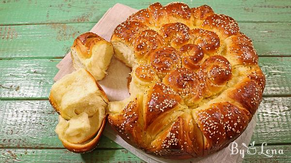
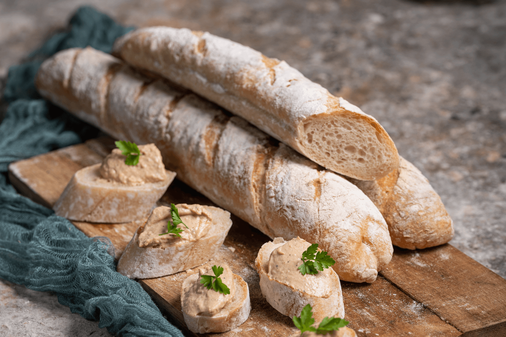
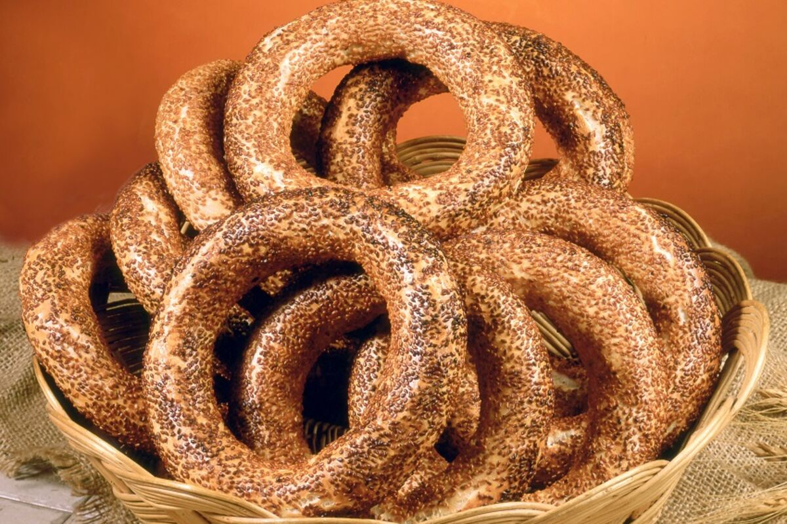
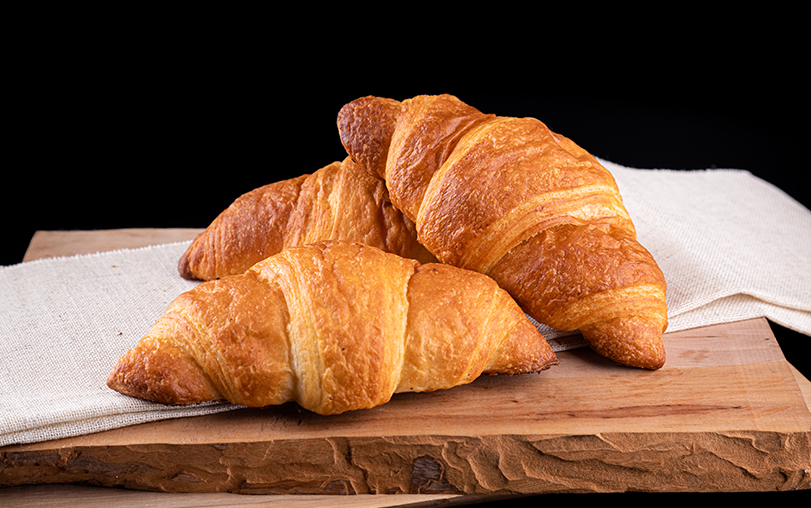
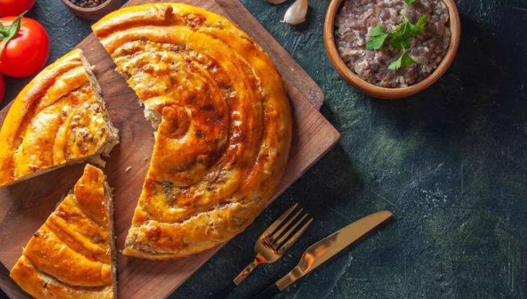

U srcu našeg grada nalazi se pekara koja nije samo mesto gde se prodaje hleb, već i oaza mirisa i ukusa. Svaki dan, naši posvećeni pekari s ljubavlju pripremaju sveže peciva, hleb i kolače, koristeći samo najkvalitetnije sastojke. Bez obzira na to da li volite klasični beli hleb, integralni ili specijalne vrste poput ciabatte ili focaccie, u našoj ponudi sigurno ćete pronaći nešto što će zadovoljiti vaše nepce.
Naša pekara ponosi se dugom tradicijom, ali ne zaboravljamo na savremene trendove. Uvijek tragamo za novim ukusima i kombinacijama koje će obogatiti našu ponudu. Svake nedelje, predstavljamo nove specijalitete, od slanih kiflica sa različitim punjenjima do slatkih kolača koji će vas podsetiti na detinjstvo. Naša posvećenost kvalitetu i inovativnosti garantuje da ćete svaki put iz našeg dućana izaći s osmehom
U našoj pekari verujemo u značaj zajednice. Saradjujemo sa lokalnim proizvođačima i farmerima kako bismo osigurali sveže i organski uzgajane sastojke. Takođe, trudimo se da smanjimo otpad koristeći ekološke pakete i podstičući kupce da donose svoje torbe. Naš cilj nije samo prodaja peciva, već stvaranje zdravijeg i održivijeg okruženja za sve nas. Pozivamo vas da posetite našu pekaru i pridružite se našoj porodici zadovoljnih kupaca!
Lista proizvoda
- Pizza

- Pogaca
 - Baget
 - Djevrek
 - Kroasan
 - Burek

Recept za pizzu